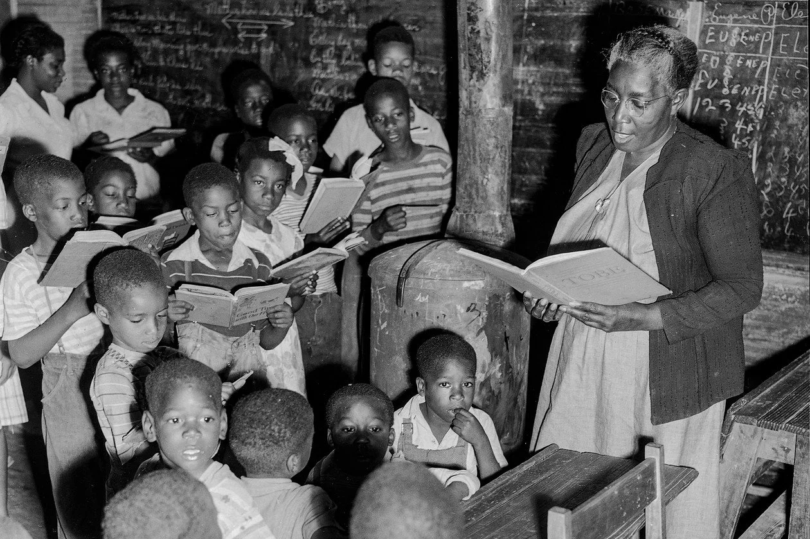
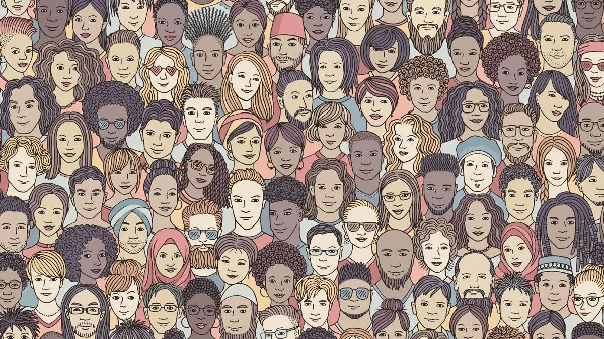
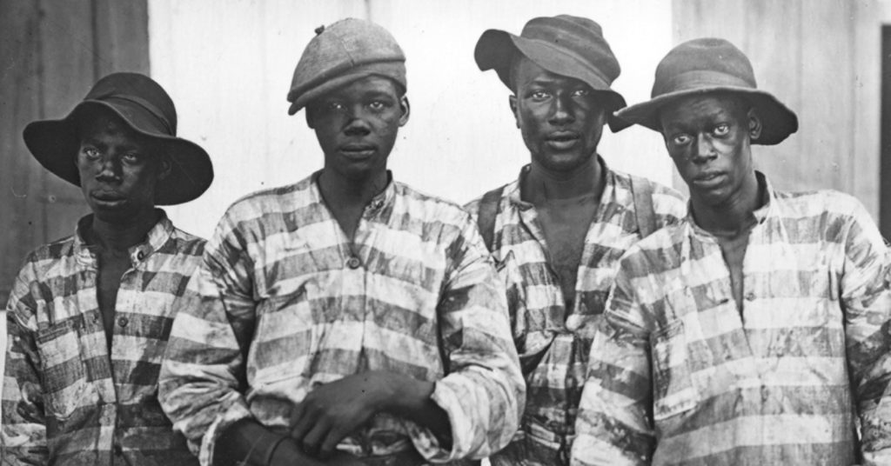
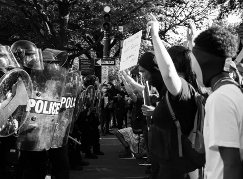

TOOLS
Racial Equity Tools
A collection of tools, research, tips, and learning materials for understanding and working toward racial equity.
Open ResourceLearning about inequality does not stop with one website. This page brings together articles, educational tools, videos, and starting points for deeper understanding.

START HERE
The resources below are meant to help viewers keep learning about history, systemic inequality, civil rights, and ways to stay informed. Use them as starting points for research, reflection, and conversation.
Visit Racial Equity Tools
TOOLS
A collection of tools, research, tips, and learning materials for understanding and working toward racial equity.
Open Resource
ARCHIVES
A digital guide with history, culture, stories, scholarship, and educational materials.
Open Resource
JUSTICE
Resources connecting racial inequality to history, law, criminal justice, and public education.
Open Resource
ACTION
Information on civil rights, advocacy, racial justice, voting rights, and community action.
Open ResourceA couple videos here that help explain the topics covered on this site.
This video explores how housing policies, segregation, and urban planning shaped modern inequality in America.
An overview of how systemic racism operates through institutions, policies, and everyday structures in society.
These resources are only a beginning. Understanding inequality requires continued learning, reflection, and a willingness to look beyond what is immediately visible.
Back to Home